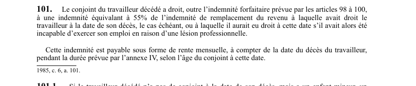

art-101-LATMP : rente mensuelle au conjoint survivant (55 % de l'IRR)
Le revenu que le travailleur décédé aurait touché est converti en rente pour son conjoint, en plus du capital versé au décès.
- Cumul : la rente s'ajoute à l'indemnité forfaitaire des articles 98 à 100, elle ne la remplace pas.
- Taux : 55 % de l'indemnité de remplacement du revenu à laquelle le travailleur avait droit à la date de son décès.
- À défaut, on retient 55 % de l'IRR à laquelle il aurait eu droit à cette date s'il avait alors été incapable d'exercer son emploi en raison d'une lésion professionnelle.
- Forme et point de départ : rente mensuelle, payable à compter de la date du décès du travailleur.
- Durée : celle que prévoit l'annexe IV, selon l'âge du conjoint à la date du décès.
🌐 LegisQuébec · 📄 PDF officiel (page 30)
Texte officiel
Le conjoint du travailleur décédé a droit, outre l’indemnité forfaitaire prévue par les articles 98 à 100, à une indemnité équivalant à 55% de l’indemnité de remplacement du revenu à laquelle avait droit le travailleur à la date de son décès, le cas échéant, ou à laquelle il aurait eu droit à cette date s’il avait alors été incapable d’exercer son emploi en raison d’une lésion professionnelle.
Cette indemnité est payable sous forme de rente mensuelle, à compter de la date du décès du travailleur, pendant la durée prévue par l’annexe IV, selon l’âge du conjoint à cette date.
Texte de l’article 101 LATMP, extrait de la couche texte du PDF officiel (page 30), sans OCR ni retouche. La capture ci-dessous et le PDF font foi.
{kind=link}

Toucher l'image pour l'agrandir🔗 Ouvrir a cette page : LATMP.pdf : page 30 · texte a jour au 20 février 2024
Voir aussi
- art. 100 · interdiction : plancher de l'indemnité forfaitaire versée au conjoint d'un travailleur décédé d'une lésion professionnelle : elle ne peut être inférieure à 94 569 $.
- art. 102 : indemnité de l'enfant mineur · droit : l'enfant mineur du travailleur à la date du décès a droit à 250 $ par mois jusqu'à sa majorité, puis à un forfait de 9 000 $ s'il fréquente alors à plein temps un établissement d'enseignement.
- art. 134 · faculté : la CNESST verse au conjoint l'indemnité forfaitaire de décès.
- 🔢 Sous-article : art. 101.1 · droit : indemnité décès.
- 🔧 Modifié par : LMRSST art. 105 (remplacé) · remplace art.
- ↑ Loi : LATMP
Pages qui pointent ici (7)
- art-100-LATMP : indemnité minimale au conjoint Recueil législatif
- art-102-LATMP : indemnité de l'enfant mineur du travailleur décédé Recueil législatif
- art-117-LATMP : montant revenu brut annuel Recueil législatif
- art-134-LATMP : versement de l'indemnité forfaitaire au conjoint Recueil législatif
- art-136-LATMP : fin de l'indemnité au décès du conjoint Recueil législatif
- Délais clés en SST québécoise Recueil législatif
- Index thématique des décisions Recueil législatif